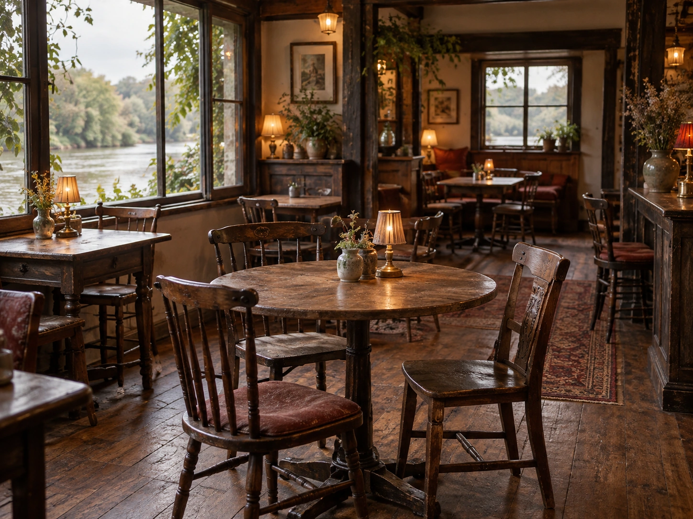

CONCEPT
念願のお店に、
その名前をつけました
Every dog は、秋田市牛島東、太平川沿いにあります。2024年1月1日に開店しました。 Instagramのアカウント名にも、その日付が入っています。
Every dog has its day.
英語のことわざで「誰にでも、いい日がくる」「誰にでも成功のチャンスがある」という意味です。店主が動物と縁が深かったことから、このことわざにちなんで名づけたと紹介されています。
店主は、秋田市内の飲食店に長く勤めてきた方です。 そのあとで、念願だった自分の店を構えました。
昼も夜も気軽にご来店ください。 秋田タウン情報に掲載された、店主の言葉より
長く働いてきた人が、自分の日を迎えた店。 店名のことわざが、そのままお店の成り立ちになっていると受け取りました。
